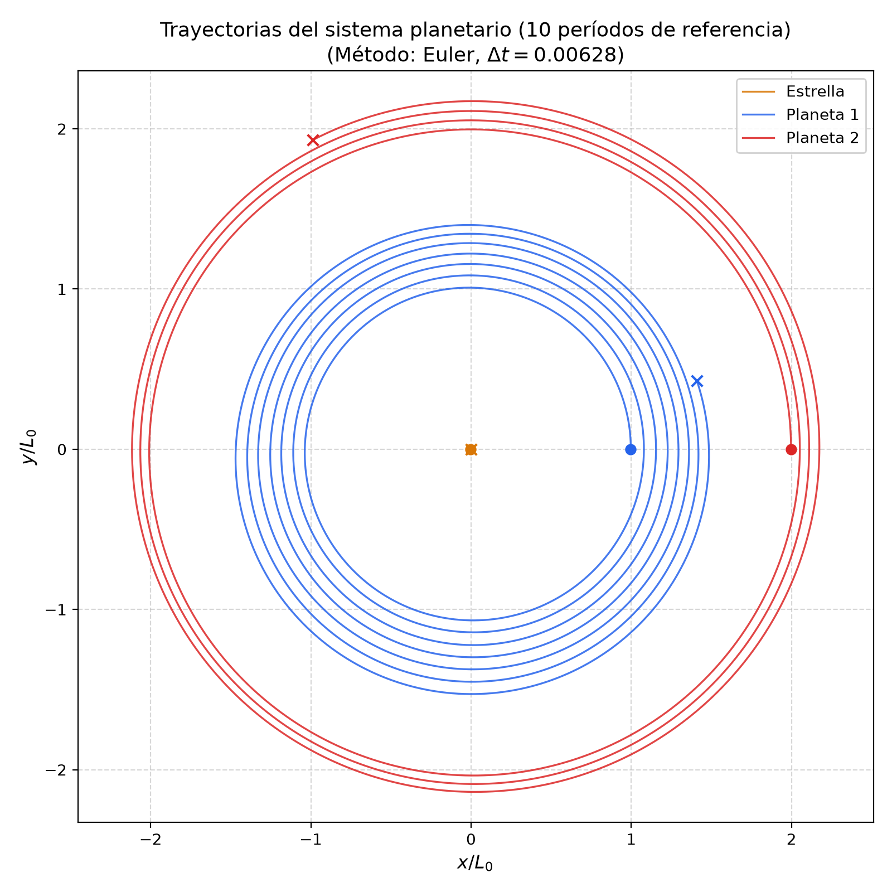
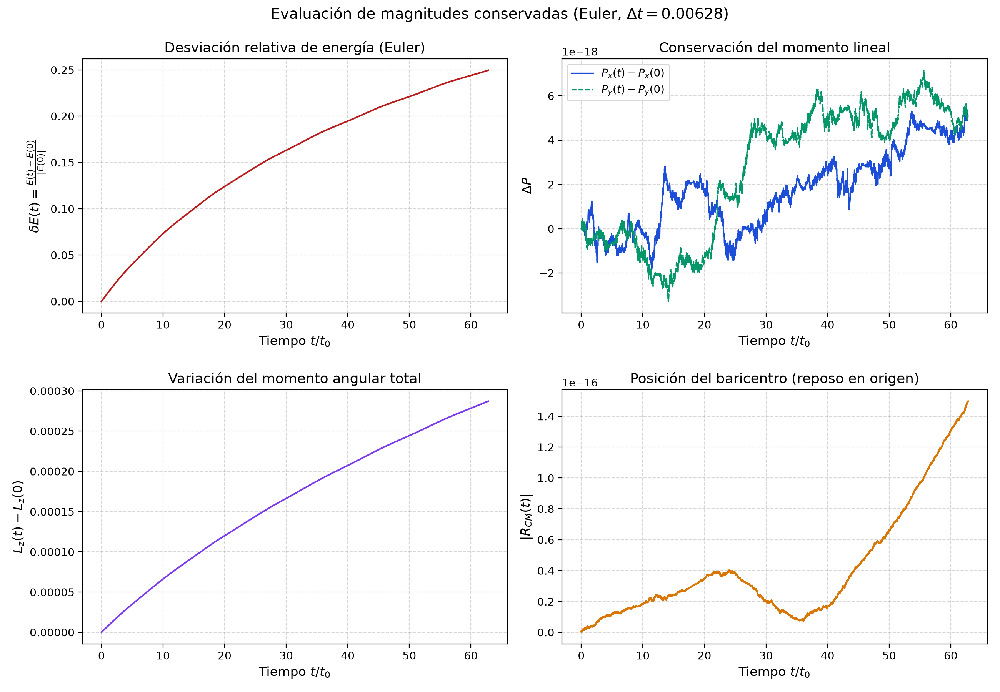
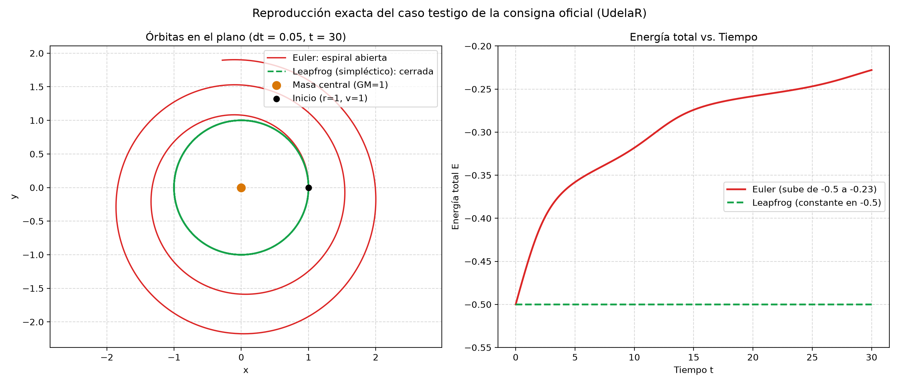

Simulación gravitatoria de un sistema planetario
Física de N cuerpos, métodos numéricos y proceso de aprendizaje con un Agente de IA
⏱️ Minutos 0 a 5
Bloque 1: La Física
El problema de 3 cuerpos, leyes de conservación y la geometría de la divergencia.
⏱️ Minutos 5 a 15
Bloque 2: La Simulación
Arquitectura del código, demo en vivo en marcha y validación científica de resultados.
⏱️ Minutos 15 a 20
Bloque 3: El Agente de IA
Cómo lo manejé, qué sirvió, el tropiezo con Pygame y cómo lo audité críticamente.
Del problema de 2 cuerpos al caos de 3 cuerpos
La solución analítica de Newton: En el problema de dos cuerpos (estrella y un planeta), la solución exacta es una elipse cerrada fija (Kepler).
El salto a 3 cuerpos: Al incorporar un segundo planeta, las atracciones mutuas planeta-planeta perturban las trayectorias. A fines del siglo XIX, Henri Poincaré demostró que no existe una fórmula analítica general y nació el estudio del caos determinista.
⚖️ Sistema aislado y Baricentro
La estrella no está fija. Trasladamos las condiciones iniciales al centro de masa para que $\vec{R}_{\text{cm}}(0) = \vec{0}$ y $\vec{P}(0) = \vec{0}$. La estrella se bambolea respetando la 3ª ley de Newton.
🎯 La pregunta física central
Cuando simulamos en computadora paso a paso...
¿El método numérico respeta las leyes de conservación de la física o crea efectos artificiales?
La intuición geométrica: ¿Por qué falla Euler?
🚗 Euler explícito: La tangente en la rotonda
Imaginen manejar un auto en una rotonda cerrada. Para mantenerse en la curva hay que doblar constantemente el volante hacia el centro (gravedad).
Euler avanza usando la velocidad del inicio del paso: $$\vec{r}^{n+1} = \vec{r}^n + \vec{v}^n \Delta t$$ En una órbita circular, la velocidad apunta por la tangente. Moverse en línea recta por la tangente hace que el planeta termine siempre afuera del círculo.
🐸 Leapfrog: Doblar en el punto medio
Leapfrog (Kick-Drift-Kick) da primero medio paso de velocidad: $$\vec{v}^{n+1/2} = \vec{v}^n + \frac{\Delta t}{2}\vec{a}^n$$
Cuando va a mover la posición $\vec{r}^{n+1} = \vec{r}^n + \Delta t \, \vec{v}^{n+1/2}$, ¡la velocidad ya dobló hacia adentro! Compensa la curvatura exactamente.
Demostración Práctica en Vivo: El Código en Marcha
Sistema: Estrella + 2 Planetas en 2D | Integrador: Euler Explícito | Paso dt = 0.002 | Las órbitas ganan energía y se abren en espiral.
python main.py para abrir las figuras en Matplotlib o python main.py --verificar para correr las pruebas unitarias ante la clase.
Cómo está armado el código (Arquitectura modular)
Organizado en simulacion_planetaria.py en funciones breves e independientes con NumPy:
1. condiciones_iniciales()
Define masas en unidades normalizadas ($M=1, G=1, L_0=1$) y traslada las posiciones y velocidades al baricentro ($\vec{R}_{\text{cm}} = \vec{0}, \vec{P} = \vec{0}$).
2. aceleraciones()
Calcula la atracción gravitatoria newtoniana por pares. Excluye autointeracciones y detecta separaciones nulas ($r_{ij} = 0$) para prevenir indeterminaciones.
3. paso_euler()
Actualiza $\vec{r}^{n+1} = \vec{r}^n + \vec{v}^n \Delta t$ y $\vec{v}^{n+1} = \vec{v}^n + \vec{a}^n \Delta t$ usando estrictamente el estado en $t_n$ (primer orden).
4. paso_leapfrog()
Implementa Kick-Drift-Kick: medio impulso de velocidad, desplazamiento completo de posición y medio impulso final con la nueva aceleración.
5. magnitudes()
Calcula en cada paso la energía mecánica $E = K + U$, el momento lineal $\vec{P}$, el momento angular $L_z$ y la posición del centro de masa.
6. simular() y graficar()
Bucle temporal que almacena la serie histórica y genera las figuras con Matplotlib manteniendo estricta escala 1 a 1 (aspect='equal').
Resultados: Sistema de 3 cuerpos durante 10 períodos

Comportamiento observado
- Estrella central (amarillo): Masa $M=1.0$, bambolea en respuesta a los planetas.
- Planeta interior (azul): Masa $10^{-3}$, $r=1.0$, velocidad kepleriana.
- Planeta exterior (rojo): Masa $10^{-3}$, $r=2.0$.
- Duración: $10 T_{\text{ref}}$ con paso $\Delta t = T_{\text{ref}}/1000$ (10.000 pasos).
Validación física: ¿Cómo sabemos que el código está bien?
1. Cuenta a mano independiente
Masa $1$ en $(0,0)$ y cuerpo en $(1,0)$ con $G=1$. La aceleración teórica es exactamente $(-1, 0)$. El código dio exactamente $(-1.000000, 0.000000)$.
2. Momento lineal a nivel de máquina
Por la 3ª ley de Newton ($\vec{F}_{ij} = -\vec{F}_{ji}$), $\sum m_i \vec{a}_i = \vec{0}$. El momento lineal $\vec{P}$ se conservó con error máximo de $10^{-18}$.
3. Período analítico de Kepler
Para 2 cuerpos circulares a $r=1$, el tiempo de retorno coincidió con $T = 2\pi\sqrt{1/GM} \approx 6.2798$.

Resultados: Caso testigo de la consigna y convergencia $\Delta t$

El caso testigo de los profesores ($GM=1, r=1, \Delta t=0.05$)
• Energía inicial: -0.500000
• Euler final: -0.2279 (en la pauta: -0.23)
• Leapfrog final: -0.500000 (variación < 3.3e-7)
Convergencia al reducir el paso a la mitad:
$\text{Error}(\Delta t) \, / \, \text{Error}(\Delta t/2) = \mathbf{1.89 \approx 2.0}$
$\text{Error}(\Delta t/2) \, / \, \text{Error}(\Delta t/4) = \mathbf{1.94 \approx 2.0}$
Demuestra que el error global de Euler es estrictamente de primer orden $\mathcal{O}(\Delta t)$.
Cómo manejé al Agente: El tropiezo con Pygame y la redirección
❌ El intento inicial: Sobrediseño
En el primer pedido, el agente generó una aplicación interactiva con Pygame con estrellas titilantes y presets estilo videojuego.
Mi intervención de control: Frené el proceso: "Esto no responde a la propuesta académica. Necesitamos código científico estándar en NumPy, Matplotlib, funciones modulares específicas y verificación física."
✅ La redirección hacia el rigor
Cambié la estrategia de trabajo hacia pedidos acotados y específicos:
- No pedirle el programa entero de golpe.
- Definir la firma de cada función (entradas de arreglos $(N \times 2)$, salidas esperadas).
- Exigir comprobaciones paso a paso antes de continuar.
Auditoría crítica: ¿Cómo comprobé que no inventaba?
🔍 1. Prueba a mano independiente
Para no confiar a ciegas, diseñé la prueba analítica ($G=1$, masa en $(0,0)$ y cuerpo en $(1,0)$). Comprobé que la aceleración diera $(-1, 0)$ antes de aceptar la función de fuerzas.
📚 2. Contraste con bibliografía
Contrasté las fórmulas de aceleración vectorial y energía orbital con el libro de Fitzpatrick (Introduction to Celestial Mechanics) y los apuntes del curso.
🧪 3. Suite de tests automatizados
Implementamos pruebas unitarias con pytest que validan la conservación de invariantes en cada modificación (6 pruebas pasando en verde).
distutils. Trabajé con el agente para simplificar el stack a librerías estándar puras y asegurar que todo corriera de forma autónoma y reproducible.
El Agente como tutor: Lo que entendí que antes no entendía
💬 Las preguntas clave que le hice
1. "¿Por qué transformamos la 2ª ley de Newton en un sistema de primer orden?"
Entendí que las computadoras no integran derivadas segundas directamente; descomponer en posición y velocidad permite avanzar paso a paso usando sólo el estado actual.
2. "¿Por qué el momento lineal no se desvía pero la energía sí?"
Me explicó que la 3ª ley de Newton garantiza la cancelación interna de fuerzas de forma exacta, mientras que la energía depende de la curvatura y la tangente de Euler.
🧠 El concepto clave que me quedó
Entendí a fondo qué significa que un integrador sea simpléctico: no es magia, sino que preserva el volumen del espacio de fases (teorema de Liouville). Por eso la energía oscila acotada y las órbitas no se abren.
🔭 Nexo con mi carrera (Astronomía)
Esto conecta directo con mi curso de Dinámica Orbital: entendí los fundamentos numéricos detrás de simuladores profesionales como REBOUND (integradores WHFast).
Conclusiones y aprendizajes del proyecto
1. Física vs Computación
Un algoritmo puede no tener errores de programación y aun así violar la física si el método numérico no conserva la geometría del sistema.
2. Integradores Simplécticos
Leapfrog demostró ser 7 órdenes de magnitud más preciso que Euler para el mismo $\Delta t$, permitiendo simulaciones astronómicas estables.
3. Uso Crítico de la IA
La IA potencia el aprendizaje cuando el estudiante mantiene el criterio científico, audita cada resultado y guía el proceso con rigor.
Código, pruebas y gráficos disponibles en el repositorio local / GitHub • Quedo abierta a preguntas.